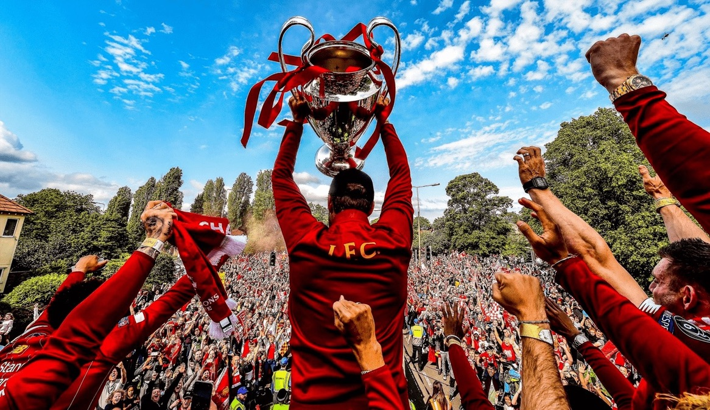

⚽️ 리버풀 FC를 소개합니다 😍

홈구장: 안필드
안필드는 잉글랜드 리버풀에 위치한 축구 경기장으로, 리버풀 FC의 홈구장입니다. 1884년에 건설되어 오랜 역사를 자랑하며, 리버풀 팬들에게는 성지와 같은 곳입니다.
선수단
버질 판 다이크 (Virgil van Dijk)는 리버풀 수비의 핵심으로, 뛰어난 제공권과 리더십을 바탕으로 팀을 이끌고 있습니다.
트렌트 알렉산더-아놀드 (Trent Alexander-Arnold)는 오른쪽 풀백으로, 뛰어난 크로스 능력과 공격 가담 능력을 갖춘 선수입니다.
응원가
리버풀 FC를 이야기할 때 빼놓을 수 없는 것이 바로 그들의 상징적인 응원가, You Will Never Walk Alone.입니다
역사
리버풀 FC는 잉글랜드 축구를 대표하는 명문 클럽 중 하나입니다. 1892년 창단되어 130년이 넘는 역사를 자랑하며, 잉글랜드 프리미어 리그에서 가장 많은 팬을 보유한 클럽 중 하나입니다.